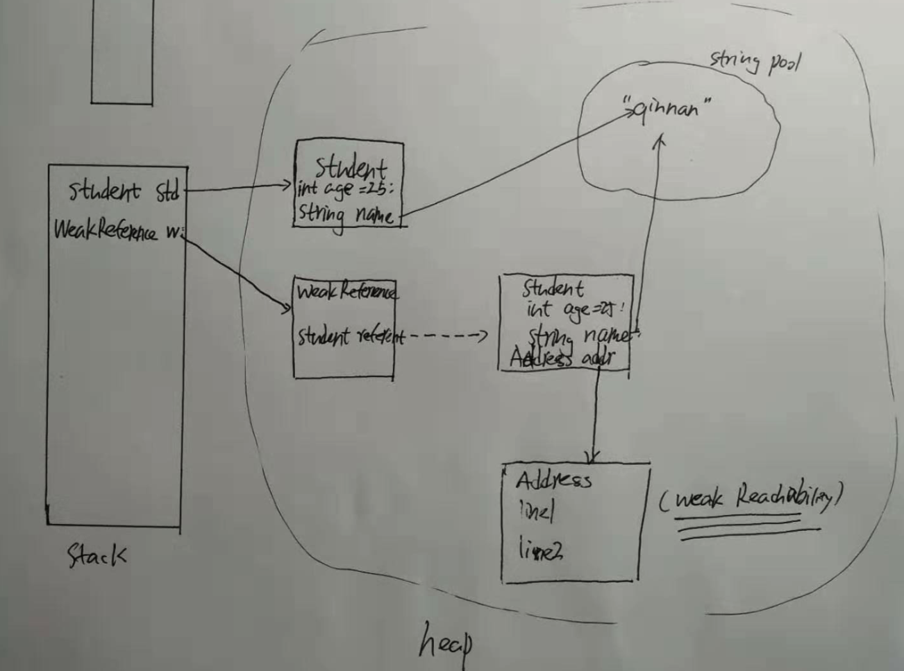

-
Java memory model
Java has two types of memory, stack and heap. (stack per thread, heap per jvm process). A stack holds references to objects that
store in heap and stores primitive type values; The heap stores objects. The heap is futher divided into serveral region for better GC performance.

[image reference https://dzone.com/articles/java-memory-management]
-
Java string pool
String is special object in terms of memory management. Because string is immutable, modication of a string is acutally to create a new string. In order to improve the performance,
java reuses string objects. In heap, there is area called string pool, which holds different string objects have been created. When declaring a new string, JVM will first try to find the same string from the string pool.
This feature is called string interning. This is the default behavior when declaring a string by using double quote.
String name = "qinnan";
However, using new or .toString() still create string object in heap. But we can use .intern() to futher interning the string.
String name = new String("qinnan").intern();
String name2 = new Object().toString().intern();
String name = "qinnan"; // create "qinnan" in the string pool.
String name2 = "qinnan"; // found "qinnan" in the string pool, add reference to that string.
String name3 = new String("qinnan");
boolean isEqual = name == name2 ; // true because they reference to the same object.
boolean isEqual2 = name == name3 ; // false
Before Java 7, the JVM placed the Java String Pool in the PermGen space, which has a fixed size — it can’t be expanded at runtime and is not eligible for garbage collection.
The risk of interning Strings in the PermGen (instead of the Heap) is that we can get an OutOfMemory error from the JVM if we intern too many Strings.
From Java 7 onwards, the Java String Pool is stored in the Heap space, which is garbage collected by the JVM. The advantage of this approach is the reduced risk of OutOfMemory error because unreferenced Strings will be removed from the pool, thereby releasing memory.
reference
-
Reference types
Java has 4 different reference types. Each reference type has a different behavior during garbage collection. The default reference is strong references. For example
Student std = new Student("qinnan", 25, Gender.Male);
StringBuilder sb = new StringBuilder();
This kind of objects will be reclaimed when no stack variables reference them.
Weak Reference: declare a weak reachability object. Weak reachability objects are reclaimed on next GC.Soft Reference: declare a soft reachability object, reclaim when running low on memory. These two type references are used with a wrapper class.
WeakReference<Student> w_reference = new WeakReference<>(new Student());
SoftReference<Student> s_reference = new SoftReference<>(new Student());
w_reference.get(); // less likely return null
System.gc(); // explicitly run GC. But GC may not run. It is not guaranteed. GC is subject to reject the request.
w_reference.get(); // most likely return null;
PhantomReference together with ReferenceQueue can notify app when an object is going to be reclaimed.
Reachability
An object is strongly reachable if it can be reached by some thread without traversing any reference objects. A newly-created object is strongly reachable by the thread that created it.
An object is softly reachable if it is not strongly reachable but can be reached by traversing a soft reference.
An object is weakly reachable if it is neither strongly nor softly reachable but can be reached by traversing a weak reference. When the weak references to a weakly-reachable object are cleared, the object becomes eligible for finalization.
An object is phantom reachable if it is neither strongly, softly, nor weakly reachable, it has been finalized, and some phantom reference refers to it.
Finally, an object is unreachable, and therefore eligible for reclamation, when it is not reachable in any of the above ways.

Java reachability analysis
Before GC reclaim memory, it need to mark objects that cannot be reclaimed. This step is reachability analysis. It searches objects that can be reached via reference from the GC Root. GC Root includes
1). Stack variables
2). Static variables of the main class
3). active threads
new Thread(new Runnable() {
@Override
public void run() {
System.out.println("New Thread by anonymous class");
}
}).start(); // we don't have a reference to it, but it's running.
4). JNI references
-
Heap organization
Garbage collection is an expensive operation. During GC, threads may be paused. So it is not practical to run GC on the entire heap.
JVM stores objects into corresponding locations accroding to the time they have lived. Heap: Young generation, old generation, permanent generation. permgen is replaced by metaspace since Java 8.
GC run on young generation frequently. The young generation is futher divided into Eden space (伊甸园), survivor 0 (S0) and survivor 1 (S1).
When an object is created, it is allocated on Eden space. Eden space is small, so it gets full quickly. GC run reachability analysis on Eden to mark alive objects.
And then GC moves alive objects from Eden and S1/0 to S0/1. S0 and S1 are "from" survivor and "to" survivor. Their role is changed after each GC. The conceptual "from"
survivor is always empty.
After a couple round (tenuring threshold, by default 15) objects in survivor will be copied to old generation space.
Minor GC: only run GC on Eden, happens when Eden is full
Full GC: run GC on young, old, and permanent generation space, happens when old or permanent space is full, or invoking System.gc()
-
GC types
1). serial gc: one thread to execute gc, app is paused during gc;
2). parallel gc: multiple thread to execute gc, app is paused during gc;
3). mostly concurrent gc: app may be run during gc;